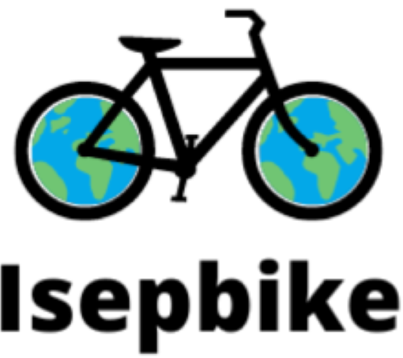

RideGreen est une startup créée par 6 camarades de classe de l'ISEP, chacun avec une spécialité différente mais soucieux de l'environnement et de la santé humaine. Cette préoccupation a conduit à la création du principal produit de cette startup, appelé ISEPbike, qui vise à améliorer la santé humaine et l'environnement.

Le vélo est l'un des moyens les plus efficaces de rester en bonne santé et de brûler des calories.
Des capteurs sonores pour surveiller les sons qui nous entourent
Des capteurs cardiaques pour surveiller la santé du cœur
Des thermomètres pour contrôler la température du corps pendant la course.
Des capteurs de gaz pour surveiller la qualité de l'air.